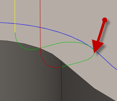

<div id="tool_feedEntry"><p>Avance utilisée lors de l'entrée dans un mouvement de coupe.</p>
<table class="tipTable" cellspacing="10">
<tr>
<td><center></center></td>
</tr><tr>
<td><center></center></td>
</tr></table>
</div>